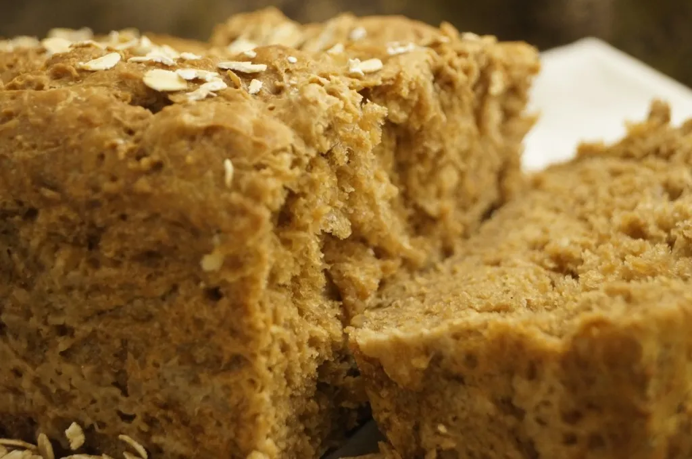

Brown Oatbread

Description
“Maester Luwin sent Poxy Tym down to the kitchens, and they dined in the solar on cheese, capons, and brown oatbread. While tearing apart a bird with fat fingers, Lord Wyman made polite inquiry after Lady Hornwood, who was a cousin of his.” -A Game of Thrones
Ingredients
- 2 cups boiling water
- 1/2 cup molasses
- 2 Tbs. butter
- 1 cup rolled oats (not the instant variety)
- 1 Tbs. yeast
- 1/2 tsp. coarse salt
- ~2 cups flour (you may need more or less depending on how much liquid your oats soaked up)
- 1 Tbs. melted butter